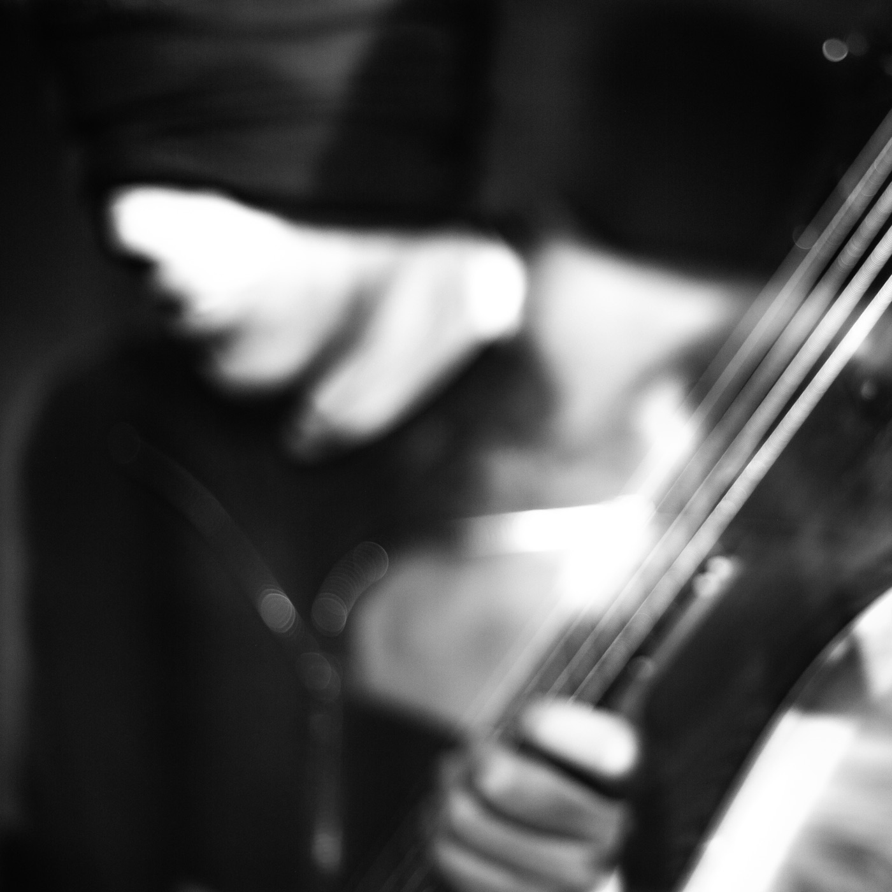

Finished. Seeking a label.
Live at the Philosophical
Research Society
One evening of ambient bass guitar and live electronics, played straight through and recorded as it happened. Nothing was overdubbed afterward. What the room heard is what the record is.
The bass is played as a sustaining instrument. Long tones are captured, thrown into delay, and folded back on themselves until the harmony moves on its own. The performer's job becomes deciding what to let go of.
Hear it
A private demo is available for labels and press.

The venue
The Philosophical Research Society sits on Los Feliz Boulevard behind a granite Egyptian figure, the one on the cover of this record.
Manly P. Hall founded it in 1934 as a library and a place to think, and built it in Mayan Revival: terra cotta and seafoam green, hand-carved doors, stepped triangles running along the garden wall. The architect was Robert Stacy-Judd. It is a Los Angeles Historic-Cultural Monument now, holding more than thirty thousand rare volumes, and the auditorium once housed the Hammond organ Korla Pandit played.
Nobody arrives there by accident. An audience that turns up at the PRS has already agreed to sit still and listen, which is the one condition this music actually needs. The building has been gathering that kind of attention since 1934. I plugged in and played into it.
For labels
The record is finished and ready to place. If it belongs on your label, say hello.